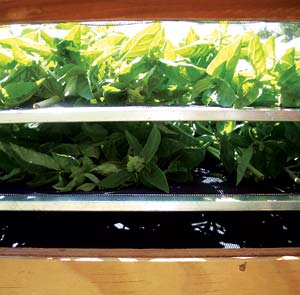
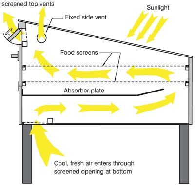

Build A Solar Food Dehydrator
Preserve your harvest with free energy from the sun.
By Eben Fodor
August/September 2006
More and more people are recognizing the importance of food quality in their daily lives. The freshest, ripest, tastiest and most nutritious food comes from our own gardens or local farmers. But because these high quality fruits and vegetables are seasonal, you have access to them for only a few weeks or months each year.
What do you plan to eat the rest of the year? Will you rely on industrial foods grown by strangers from all over the world and shipped thousands of miles? With increasing interest in healthy eating, sustainable local food supplies and self-reliance, many people are discovering the benefits of a solar food dehydrator.
Solar food drying is more than a curiosity or hobby - it’s an ideal application for solar energy. Solar radiation passes through the clear glass top of a wooden dehydrator box, then the heat trapped by the box dries the food. The dehydrator also may have an absorber plate inside, which indirectly heats your food and creates a convection current of air that enters a vent at the bottom of the dryer (see image gallery). The cool, fresh air that enters the vent heats up, circulates through the dryer, then exits through a vent at the top. As your food dries, moisture is carried away with the hot air. But do solar food dryers work well? Are they practical? Yes, but first let me put this topic in the context of creating a healthy and sustainable food supply.
Eat in Season Year-round
Food preservation is the key to extending the summer’s precious bounty of locally grown produce throughout the year. If you’re like me, you would prefer a method that’s easier and requires less energy than canning.
Freezing is commonly viewed as the most convenient preservation method, but freezers require a constant source of electricity. Your food will be vulnerable to power outages and mechanical failures, and freezer burn will limit the storage life of most foods to about six months.
Drying is an excellent method of food preservation that maintains a high level of flavor and nutrients, while providing a convenient, compact, easy-to-store supply of your favorite produce. Electric food dryers work fine, but I don’t care for the constant noise, heat and odors they add to my house. Electric dryers also take away valuable counter space for weeks on end and can attract ants and other pests. The electricity to run them costs about a dollar a load. The convenience of electricity does not compare to the satisfaction of drying food with free solar energy.
Disenchanted with electric drying, I began experimenting with solar drying. With a background in engineering and solar energy, I soon designed and built my first solar dehydrator. I was delighted to watch the sun quickly dehydrate my organic fruits and veggies. It worked even better than I had hoped, drying large batches of food in one to two days. I dried my entire surplus of garden and orchard produce, leaving nothing to waste. The following year, I grew a larger garden so I could dry even more food.
Got Sun?
If you’re wondering whether solar drying could be right for your location, consider that I live in Eugene, Ore., at a latitude equivalent to Bangor, Maine. We receive lots of rain, but fortunately, we also receive enough sunshine during the summer and fall harvest seasons to successfully dry all our crops with solar energy. If you can get two days of sunshine in a row with some regularity, solar food drying will work for you.
But for those times when the sun is hiding, a backup heating system still can help. I added 200-watt light bulbs as heating elements so I could finish drying my produce any time the weather turned cloudy.
Good Designs
A solar food dehydrator can be made in many designs, ranging from the simple to the complex, and from small to large. For the home gardener, a good solar food dehydrator has these qualities:
- It dries food quickly - on par with a good electric food dryer.
- It has venting controls that allow for easy adjustment of drying temperature and airflow.
- It’s easy to load, unload and clean.
- It’s easy to set up and put away, with little or no assembly.
- It’s relatively compact and lightweight for portability.
- It’s weather-resistant and keeps your food dry in the event of rain.
- It has sturdy and durable construction for a long life of outdoor operation.
- It’s pest-proof, and all vent openings are screened.
- The food trays are made from durable, nonstick and food-safe materials.
Now that you know the basics about solar food dryers, where do you go for designs? Surprisingly, you won’t find much useful information on the Internet. If you search, you will find plans for solar dryers made from cardboard and duct tape. Skip these and stick with the handful of high quality dehydrators that meet my criteria. My book The Solar Food Dryer provides information on some of the better designs and includes complete plans for building the SunWorks dehydrator I designed.
The easiest solar food dryer to build is a “hot box,” a design in which the food is enclosed and protected in a box with a clear covering on top. Screened holes should be in the bottom and sides, so warm, moist air can exit the dryer.
To increase airflow and efficiency, you’ll have to modify the simple hot-box design. Many high-performance designs are based on the strategy of separating the two functions of a solar food dryer: gathering heat and drying the food. The New Mexico dehydrator shown below illustrates this approach.
My design, the SunWorks, integrates the solar collector and food drying cabinet into a compact configuration, which uses both direct heating (like the solar hot-box dryer) and indirect heating from the absorber plate. The airflow is optimized for even drying, and ventilation is achieved by natural convection (see image gallery).
How to Use a Solar Dryer
You don’t need to be a solar whiz to operate a solar dehydrator - just place it in a sunny spot oriented to the south and load it with food. If you will be around during the day, you can speed drying by occasionally repositioning the dryer to track the sun as it moves across the sky. Many foods will dry in one day of sunshine. Wet foods such as tomatoes or pears will require a second day. They should be dry enough after the first day to stay in the dehydrator overnight.
Always start with food that is at its peak freshness and ripeness - simply wash, slice to your desired thickness and place in your solar dryer. I get great results without any blanching or pre-treatments. The dried food consistently looks and tastes great. The flavor is better than anything I find in supermarkets, and it’s free of sulfites (a sulfur-based preservative) and other additives found in commercial dried foods.
Most people think about drying food in August, when they can’t keep up with the supply from their gardens. But there is abundant solar energy in the spring for drying. In May or June, you can start capturing early season crops such as peas, blueberries and strawberries. Then you’ll be ready for your summer and fall bumper crops of beans, plums, peaches, apples and squash.
As you think about how much fun you will have with a solar food dryer, consider that by preserving and storing produce, you can expand your garden and grow more of the things you’d like to enjoy year-round, such as tomatoes. A solar food dehydrator is a great way to maintain a nutritious and tasty supply of high quality, locally grown foods all year long. A good dehydrator will produce outstanding results, along with the satisfaction of saving energy and money by harnessing the power of the sun.
Food Drying Favorites
Fruits: apples, apricots, bananas, blueberries, grapes (seedless), peaches, pears, plums and strawberries.
Vegetables: broccoli, carrots, cauliflower, corn, green beans, onions, peas (sweet, in pod), peppers, potatoes, summer tomatoes, zucchini and other squash.
Mushrooms and herbs are excellent, too!
Cooking with Dried Foods
Most dried vegetables can be quickly and easily rehydrated in soups or by including a bit more water in recipes such as zucchini bread. For great additions to stir-fry and pasta dishes, you also can rehydrate vegetables by soaking them in water for 10 minutes to an hour.
You can mix dried fruits with things such as hot cereal, muesli or granola to add sweetness and nutrients. They also can be blended with seeds, nuts and grains to make wholesome energy bars. Solar dried tomatoes taste sweet and are delicious when eaten plain, marinated in olive oil and garlic, or made into a tomato pesto.
Many dried foods are excellent when eaten as they are. In fact, drying can improve the flavor of some foods. Bananas are fantastic fruits, but dried bananas are heavenly. A Roma tomato is almost too bland to eat fresh, but when dried, it’s a treat your taste buds will savor. Watery Asian pears are sometimes a little disappointing, but when dried, they are among the finest treats on Earth.
Eben Fodor is the author of The Solar Food Dryer, a Mother Earth News "Book for Wiser Living" from New Society Publishers. He is an avid organic gardener with a background in solar energy and engineering.
Highly recommended by the Mother Earth News editors: The Solar Food Dryer book, by Eben Fodor. If you are thinking of building a solar food dryer, or you just want to learn the basics of how to preserve food by dehydrating, this is the best book available. Includes full details on how to build a very effective solar-powered dehydrator. Order now.
|
EBEN FODOR With increasing interest in healthy eating, sustainable local food supplies and self-reliance, many people are discovering the benefits of a solar food dehydrator. |
 EBEN FODOR Unlike freezing, drying is a preservation method that doesn’t leave your food vulnerable to power outages and mechanical failures. |
EBEN FODOR Drying is an excellent method of food preservation that maintains a high level of flavor and nutrients in these tomatoes. |
|
EBEN FODOR Many dried foods, such as these plums, are excellent when eaten plain. In fact, drying can improve the flavor of some foods. |
EBEN FODOR You can mix dried fruits, such as these apples, with hot cereal, muesli or granola to add sweetness and nutrients. |
EBEN FODOR Dried foods store well in airtight containers and will keep for up to one year. |
|
 EBEN FODOR The author and his SunWorks solar food dryer. |
EBEN FODOR Peppers are one of the easiest foods to dry and taste better for it. |
 EBEN FODOR Most dried vegetables can be quickly and easily rehydrated in soups or by adding a bit more water to some recipes, such as zucchini bread. |
|
NEW MEXICO SOLAR ENERGY ASSOCIATION The New Mexico solar food dryer combines direct and indirect solar heating. Direct sunlight heats the racks of food in the upper part of the dryer, while the corrugated metal absorber plate at the bottom of the dryer promotes indirect heating by creating a convection current of hot air that travels upward through the racks of food. |
|
|